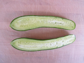
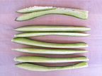
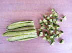
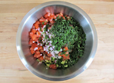
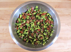

Israeli Salad
Ingredients
- 1 pound Persian cucumbers, diced
- 1 pound fresh ripe tomatoes, seeded and diced
- 1/3 cup minced onion (optional)
- 1/2 cup minced fresh parsley
- 3 tablespoons extra virgin olive oil
- 3 tablespoons fresh lemon juice
- 1/2 teaspoons salt
Instructions

- Slice the Persian cucumbers in half lengthwise

- Slice each half into 4 slices lengthwise, so you have 8 long, thin pieces total

- Hold the long, thin pieces together with one hand, and slice the bunch into very small pieces with the other hand

- Place the diced cucumbers into a large mixing bowl along with all the other ingredients

- Mix until vegetables are well coated with parsely, oil, lemon juice, and salt
- Best served fresh at room temperature. You can also serve chilled for a more refreshing salad
Salads
Home